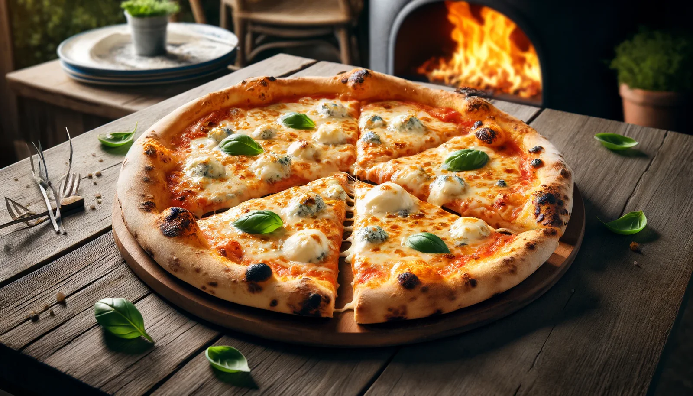

Upptäck konsten av den perfekta pizzan, varje tugga är ett smakfullt äventyr!
Välkommen till Pizzeria Tony's!
Vi är stolta över att erbjuda de bästa pizzorna i stan. Våra kockar använder färska ingredienser och hemlagad sås för att skapa smakrika och autentiska italienska rätter. Prova vår signaturpizza "Napolitana" med mozzarella, tomatsås, basilika och olivolja. Eller varför inte testa vår "Quattro Formaggi" med fyra olika sorters ost? Vi har även ett brett utbud av pastarätter, sallader och efterrätter. Kom in och njut av en god måltid hos oss!
Beställ online Snabbt och säkert med Klarna betalning. Se vår meny och beställ direkt online från sidan. Betalning sker med kort eller Swish.